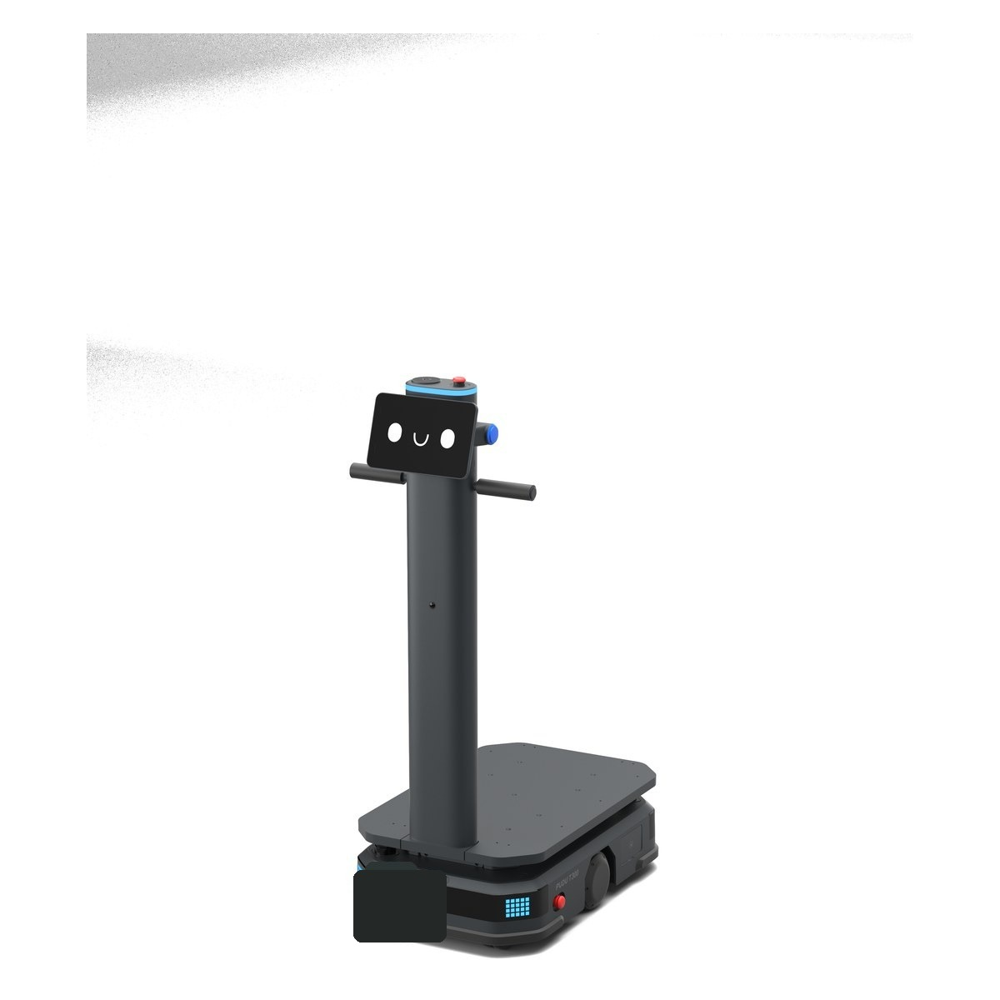
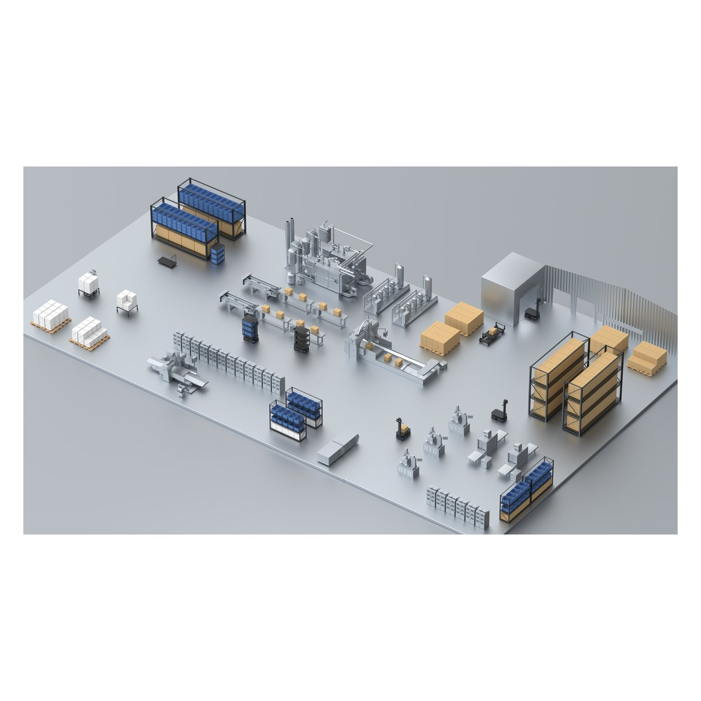
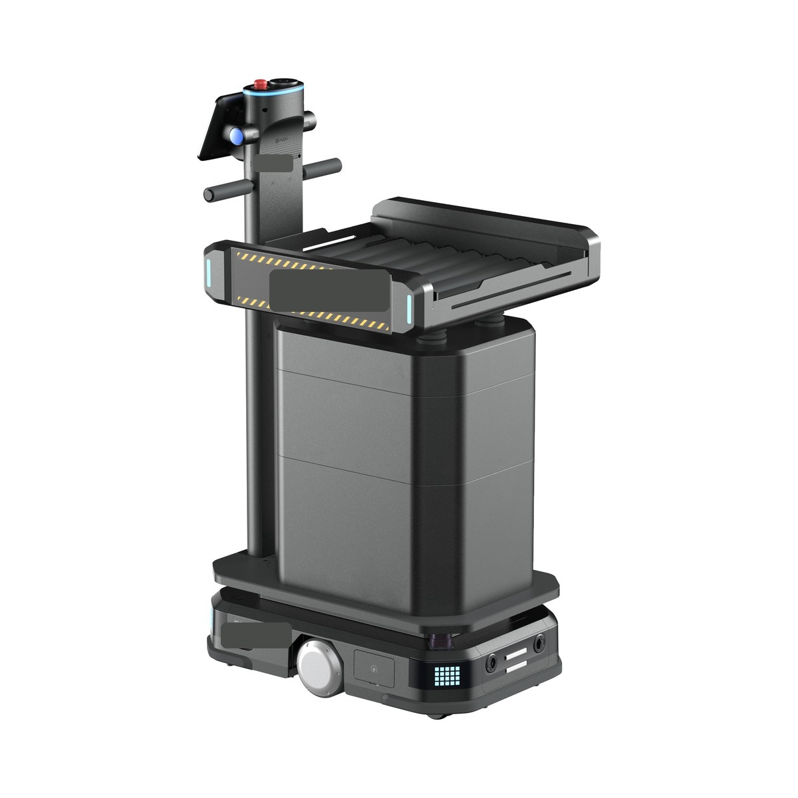

AMR 选型容易走偏的地方，是把它当成买一台设备。参数表上载重、速度、续航都写得清楚，看起来对比一下就能定。但真实项目里决定成败的不是单机参数，而是四件事的配合：机器能不能装得下这批货、能不能和你的系统对话、能不能在你的通道里跑起来、出问题时谁来收拾。
这四件事必须一起评估。任何一项单独看都能通过，组合起来却跑不通——这是 AMR 项目中需要关注的失败方式。下面逐项说明每一项要问什么，以及漏掉它会在哪个阶段暴露。
一、载荷：不只是重量
"载重 300 公斤"这个数字只回答了一半问题。同样 300 公斤，一箱五金件和一托盘纸巾对机器人的要求完全不同。要确认的是下面五项：
最后一条值得单独强调。很多项目在"货物规格不统一"的前提下选了更复杂的视觉识别方案，成本上去了，成功率仍然不稳定。先把载具标准化，再选相对简单的机型，通常是更划算的路径——这属于流程改造，不是设备采购，但它对项目成败的影响更大。



二、接口：任务从哪里来，结果回到哪里
AMR 自己不知道该搬什么。任务来自 WMS、MES 或产线控制系统，搬完的结果也要写回去。这一层没设计好，就会出现"机器人在跑，但系统里的库存不对"这类比不上机器更麻烦的问题。
是 WMS 直接下发到调度系统，还是经中间层转换？中间层多一道，故障排查就多一环。要明确任务的唯一来源，避免出现两个系统都能派单。
"把 A 区 3 号位的料箱送到 12 号工位"是一个任务，还是拆成取、运、放三步？粒度越细越可控，但接口调用次数也越多，需要在两者之间选定。
机器人放下货物就算完成，还是等工位确认才算？前者快但可能与实际不符，后者准但依赖工位有确认动作。库存准确性取决于这个选择。
任务失败时，上游系统收到的是什么？只是"失败"，还是"卡在 B 通道、货物仍在车上"？后者才能让上游决定是重派、转人工还是暂停该区域。
"状态回写的时机"这一条需要在实施前明确。选"放下即完成"，效率高，但如果货物放错位置、或工位没及时取走，系统里的库位就是错的；选"工位确认后完成"，数据准，但工位操作员必须扫码或按确认，这是新增的人工动作，要提前和产线沟通。没有哪个选择是绝对正确的，但必须在上线前定下来并写进接口文档。
三、路线：台数是算出来的，不是拍出来的
"要几台 AMR"这个问题的答案来自节拍计算，不来自经验估算。算法很简单：先量清楚业务节拍要求，再算单趟耗时，两者相除。难的是把单趟耗时里的各段都算全。
高峰时段每小时需要完成多少趟搬运。要用高峰值，不是日均值——按日均配置的车队在高峰时可能出现运力不足或等待。
取放点之间的实际路径长度，不是直线距离。绕行、单向通道与禁行区都要按真实路径量。
对位、顶升或辊筒交接各需要时间。短距离高频搬运场景里，这部分往往比行驶时间还长。
多台车共用通道时会互相让行。车越多，单车效率越低——这条让台数不能线性外推。
按连续作业班次计算，需要预留同时在充的车位比例。三班连转的场地要按"总是有车在充"来配。
把这五段串起来走一个例子。某电子厂的产线配送场景：高峰时段每小时需要完成 60 趟料箱配送，取料区到工位区单程约 80 米。逐段量下来是这样的：
这个算例里有两个值得注意的点。第一，取放对接占了单趟耗时的四分之一——在这种短距离高频场景里，把对接时间压缩半分钟，效果相当于多买半台车，所以优化载具与对位方式往往比加车划算。第二，交汇等待那 1 分钟是按 6 台车实测的，如果车队扩到 10 台，这个数字会上升，不能沿用。
这正是下面要说的问题：台数不能线性外推。
"交汇等待"是台数计算里需要重点校核的一项。它不是线性的：通道条件不变的情况下，车从 3 台加到 6 台，总产出未必翻倍，因为交汇点的等待会随车数上升。这意味着"多买几台就能提产"的假设在窄通道场地里往往不成立，正确的做法是先改通道或调整取放点布局，再考虑加车。
另外要提前确认人车混行的规则。仓内有叉车、拖板车与作业人员时，AMR 的速度必须下调，通道也要划分。这部分规则由现场安全管理决定，不是技术参数——但它直接影响单趟耗时，因此要在算台数之前明确。
载荷决定机型，接口决定数据对不对，路线决定台数，异常处理决定能不能长期跑。忽略其中任何一项，都可能在试运行中遇到相应问题。
四、异常处理：需要在上线前明确
选型阶段几乎没人问"卡住了怎么办"，但这恰恰是决定项目能不能长期运转的一项。下面五种情况必须在上线前定好处置流程，并明确到岗位。
临时堆货或叉车停放阻断通道。等多久算超时、超时后是绕行还是报警，要有规则。
托盘摆歪、货架位置偏移导致取放失败。重试几次后转人工，货物状态怎么记。
低频但影响大。谁负责现场处置、系统里的库位怎么修正，需要事先约定。
网络中断或故障停机。它身上的任务由谁接手，剩余车队能不能撑住节拍。
调度系统或网络整体故障时，产线能不能切回人工搬运继续生产。
前四类的处置流程有一个共同写法：定超时阈值、定重试次数、定转交对象。以"路径被堵"为例，可执行的规则是——等待 60 秒后尝试重新规划路径，仍不通则向现场班组长推送告警并把任务挂起，班组长清障后手动恢复；如果 5 分钟内无人处理，调度系统把该任务转派给其它车辆或标记为需人工搬运。三个数字（60 秒、5 分钟、重试次数）和一个岗位（班组长）就构成了完整流程，不需要更复杂的设计。
"对接失败"的关键在于失败后货物状态怎么记。重试两次仍失败时，货物可能还在车上、也可能半推出，系统必须明确记录成哪一种，否则后续库位就乱了。建议的做法是失败后车辆保持原地不动、任务状态标为"待人工确认"，由工位操作员现场判断并在系统里确认实际位置——这比让机器人自行判断更可靠。
"货物掉落"频次低但影响大，流程要写得比其它几类更死：现场立即停止该区域调度、由安全员处置、库位由仓管手动修正并留记录。"单车离线"则要提前算清楚——如果车队按 7 台配置刚好满足节拍，那么一台离线就意味着当班节拍达不到，需要事先约定是降低配送频次、还是临时启用人工补位。这个决定应该在合同或运维文档里写明，而不是等第一次离线时现场争论。
最后一条"整体降级"在产线场景里是硬要求。AMR 承担产线配送后，如果调度系统故障就意味着停产，那这套方案的风险是不可接受的。可执行的做法是保留人工搬运通道与最小库存缓冲，让系统故障时产线能低速继续运转——这部分设计成本不高，但它决定了甲方敢不敢把关键工序交给机器人。
五、跑起来之后：AMR 数据回到 WMS 与 MES
车队上线后会持续产生一批数据，这些数据的价值常被忽略——它们不只是"机器人干了多少活"，而是整条动线的实测记录。下面三类数据可接回上游系统使用。
把每趟任务的行驶、对接、等待时间分别记录并按取放点聚合，就能看出哪个工位对接慢、哪段通道堵。这类问题靠现场观察很难量化，靠数据一周就能定位。改一个工位的对接结构，效果往往好过加一台车。
按前面五类异常做频次统计并按位置聚合。如果"路径被堵"集中在固定几个点位，那是现场管理问题；如果"对接失败"集中在某个工位，那是该处货架或载具需要调整。把这份统计每月同步给运营方，比笼统反馈"机器人经常出问题"有效得多。
实际完成趟数与计划趟数的比值，按班次记录。产量要提升时，这份历史数据可用于评估"现有车队还有多少余量、加几台够用"，扩容时仍需结合现场条件复核。
这三类数据都要求调度系统能按任务粒度导出记录，这一点应该在接口设计阶段就提出来——上线后再加，往往要改数据结构。回到第二节的建议：任务粒度定细一些，代价是接口调用多，收益是这些分析全都能做。
把五项放在一起看，AMR 选型其实不是设备比较，而是一次动线与流程的重新设计。设备选型是其中一个环节。先把载具统一、接口定清、路线量准、异常写明、数据留通，再回头选机型，有助于减少项目返工。